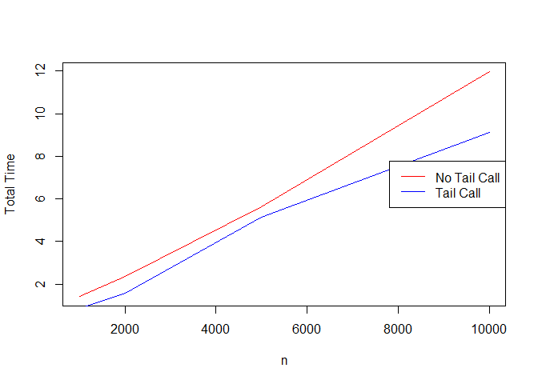

The goal of trampoline is to …
Installation
You can install the development version from GitHub with:
# install.packages("devtools")
devtools::install_github("rdinnager/trampoline")This package and this vignette are heavily inspired by the trampoline package in Python (https://gitlab.com/ferreum/trampoline). In fact, this package is more or less a straight port of that package to R, and this vignette uses all the same examples from the Python trampoline readme, so I thought I would acknowledge that first. For more interesting discussion on trampolining, what it is, what it is good for, etc. please read this post by Alan Dipert for discussion specific to R, and this more general post by Eli Bendersky that also goes into a number of related programming concepts and is a really interesting read (though it is focused on Python and Clojure).
What is Trampolining?
In brief, trampolining is a method of doing recursive programming that let’s you theoretically recurse infinitely. Why can’t you do this normally? Well, languages that allow recursive programming, that is, functions that can call themselves, such as R, usually have what is called a ‘call stack’. A call stack keeps tracks of which calls must be resolved before other calls can be executed. In a deeply recursive function, this call stack gets very large, and most programming languages have a limit to how large it can get, including R. We can demonstrate this by creating a very simple recursive function and then running it very deeply.
print_numbers <- function(n) {
if(n >= 1) {
print_numbers(n - 1)
print(n)
}
}This trivial function prints numbers from 1 to n by calling itself to print the previous number. The numbers are printed in correct order because the function recurses all the way until n is less than one before continuing, then each recursive call returns to the previous call in reverse order. Let’s try it.
print_numbers(5)
#> [1] 1
#> [1] 2
#> [1] 3
#> [1] 4
#> [1] 5Now, if we increase n to a very large number, we can easily ‘blow up’ the call stack.
print_numbers(10000)
#> Error: evaluation nested too deeply: infinite recursion / options(expressions=)?Trampolining is a way to get around this limit by avoiding using the call stack. The trampoline package implements a simple general trick that theoretically works on any recursive algorithm, which takes advantage of ‘generator’ functions. Now, this didn’t use to be possible in R, because R does not have a native ‘generator’ concept. However, R now does have ‘generators’, thanks to the coro package. You don’t actually need to know anything about ‘generators’ to use trampoline, however, if you are curious and would like to know more, the documentation of coro provides an excellent introduction. Here is the trampoline version of the print_numbers() example. Instead of a function, we create a generator (using coro::generator()), and then we wrap any recursive calls with the yield() function (this causes the generator to return the argument to yield() to the calling function and pause execution, which drives the recursion). In practice, all we need to remember is to add yield() around our recursive calls. This is the trampoline version:
library(trampoline)
## generator version
print_numbers <- coro::generator(function(n) {
if(n >= 1) {
yield(print_numbers(n - 1))
print(n)
}
})
catch <- capture.output(trampoline(print_numbers(10000))) ## capture output to prevent flooding document with numbers
head(catch)
#> [1] "[1] 1" "[1] 2" "[1] 3" "[1] 4" "[1] 5" "[1] 6"
tail(catch)
#> [1] "[1] 9995" "[1] 9996" "[1] 9997" "[1] 9998" "[1] 9999" "[1] 10000"trampoline also works with recursive function that return a value at the end. To return a final value you just need to wrap the return value with the trm_return() function. This flags to trampoline that this should be returned from the final recursion of the function. Here is an example of a recursive function to calculate and return a factorial:
Running this function will exhaust the call stack in as little as 5000 recursions:
factorial(5000)
#> Error: evaluation nested too deeply: infinite recursion / options(expressions=)?The trampoline() version runs fine, and shows us that the factorial of 5000 is far too large to be represented as an integer in R (resulting in Inf).
factorial1 <- coro::generator(function(n) {
if(n <= 1) {
return(trm_return(1))
}
val <- yield(factorial1(n - 1))
return(val * n)
}
)
trampoline(factorial1(5000))
#> [1] InfWith the standard trampoline approach, generator functions spawn generator functions, and each generator is stored in a list internally. All must exist simultaneously, which means that memory can be exhausted in very deep recursions (but typically we have much more RAM available than what is provided in the call stack – in case you are wondering why the call stack is so limited, here is one stackexchange question related to that). This approach is very flexible and allows pretty much arbitrary recursive functions where all we have to do is wrap our recursive call in yield(), which makes our function a generator. However, in some cases our recursive functions can be rewritten in a form that allows for a more memory efficient approach. These are know as tail call recursions – their important characteristic is that the recursive call comes as the very last operation in the function. If so, this makes the function a type of simple continuation which can be easily transformed into a standard loop under the hood. trampoline supports tail call recursion by providing a function trm_tailcall() that you can wrap your recursive call in, and which let’s trampoline know that it can take advantage of this more efficient form (additionally for tail call recursions we do not need to call yield() though it will not hurt to do so). For example, the above factorial recursion function is not a tail call recursion because the last operation is the multiplication by n, rather than the recursive call. However, this function can be transformed into a tail call recursion with the help of an additional argument:
factorial2 <- coro::generator(function(n, x = 1) {
force(x) ## necessary thanks to R's lazy evaluation
if(n <= 1) {
return(trm_return(x))
}
val <- trm_tailcall(factorial2(n - 1, x * n))
return(val)
})
trampoline(factorial2(5000))
#> [1] InfNote the use of force(x). This is required to work around R’s default lazy evaluation, which means an argument is not evaluated until it is used. force(x) makes sure x is evaluated before it is passed to the next recursion. Without this, it would not be evaluated until the very end of the recursion sequence when it is returned. This has the side effect of requiring R to maintain a call stack to keep track of the environment where x was created, and this causes a stack overflow. If you get an error saying the call stack is exhausted when using trampoline(), lazy evaluation is usually the culprit. Experimenting with forcing different arguments will generally resolve it. To be safe you can simply force all arguments if you wish (note you do not have to use force(), you only have to use the argument somehow before it is passed to the next function – just putting n; x as the first line of the above function would work, though it is less clear what the purpose is, which is why force() exists).
Just to show that these all return the same result, we can run them with smaller n where the regular recursive version will work.
factorial(10)
#> [1] 3628800
trampoline(factorial1(10))
#> [1] 3628800
trampoline(factorial2(10))
#> [1] 3628800The second version using the tail call should use much less memory than the no tail call version. We can see that using the bench::mark() function.
bench_res <- bench::mark(trampoline(factorial1(1000)),
trampoline(factorial2(1000)),
trampoline(factorial1(2000)),
trampoline(factorial2(2000)),
trampoline(factorial1(5000)),
trampoline(factorial2(5000)),
trampoline(factorial1(10000)),
trampoline(factorial2(10000)),
check = FALSE, iterations = 3)
#> Warning: Some expressions had a GC in every iteration; so filtering is disabled.
plot(as.numeric(bench_res$mem_alloc)[c(TRUE, FALSE)] ~ c(1000, 2000, 5000, 10000), type = "l", col = "red",
xlab = "n", ylab = "Bytes Allocated")
points(as.numeric(bench_res$mem_alloc)[c(FALSE, TRUE)] ~ c(1000, 2000, 5000, 10000), type = "l", col = "blue")
legend("right", legend = c("No Tail Call", "Tail Call"), col = c("red", "blue"), lty = 1)We can also see that the tail call version is slightly faster:
plot(as.numeric(bench_res$total_time)[c(TRUE, FALSE)] ~ c(1000, 2000, 5000, 10000), type = "l", col = "red",
xlab = "n", ylab = "Total Time")
points(as.numeric(bench_res$total_time)[c(FALSE, TRUE)] ~ c(1000, 2000, 5000, 10000), type = "l", col = "blue")
legend("right", legend = c("No Tail Call", "Tail Call"), col = c("red", "blue"), lty = 1)
Note that trampoline adds overhead that may result in a slower performance. However, the overhead is fairly small. It is noticeable for extremely fast computations like the ones done here, but for more complicated computations, the overhead should represent a small proportion of the total execution time. Another performance related note is that trampoline() internally disables R’s Just-In-Time (JIT) compilation (sometimes referred to as the ‘byte’ compiler). By default R will attempt to precompile functions before the first or second time they are called (depending on their ‘size’). Since generator functions are created anew in each recursion, and they are called twice overall, this mean each one will be precompiled by R, which adds enormous overhead, especially given we know they will not be called a third time in most cases. So disabling JIT makes trampoline() faster. On the other hand it means that any function you write that gets called for the first time inside the trampoline() call will not be compiled. In some cases this means you might not be able to take advantage of compilation for a function that could benefit from it. If so, you can get around this issue by calling your function once or twice before running trampoline() which will cause R to compile it (assuming you are using default JIT settings, accessible with the compiler::enableJIT() function). Alternatively you could explicitly precompile your function yourself using the compiler::cmpfun() function.
In this vignette we have used some very basic recursive functions to demonstrate how trampoline works, but it’s true power only becomes apparent in more complicated situations. If your recursion is simple enough to be converted to a tail call recursion, then existing methods might be enough for you (e.g. this post presents an R function by Jim Hester that allows tail call recursion). trampoline however, let’s you run pretty much any type of recursive function without having to think too much about it. For example, mutually recursive functions work out of the box, like this classic trivial example:
even <- coro::generator(function(n) {
if (n == 0) trm_return(TRUE) else yield(odd(n - 1))
})
odd <- coro::generator(function(n) {
if (n == 0) trm_return(FALSE) else yield(even(n - 1))
})
trampoline(even(10000))
#> [1] TRUE
trampoline(even(10001))
#> [1] FALSE
trampoline(odd(10000))
#> [1] FALSE
trampoline(odd(10001))
#> [1] TRUEAn example where trampoline can really shine is in branching recursive functions, such as functions that traverse trees of various kinds, where we don’t want to worry about hitting the call stack limit with large trees. One natural way of specifying these generally cannot be converted to tail call form easily because the recursive function is called multiple times within its body, and so they cannot all be in tail position. For some examples of these more complicated branching recursive functions, see the vignette “Traversing Trees with Trampoline”.